Префектура Канагава · Хаконэ, Гора · где остановиться
«Мадока-но мори» в Хаконэ: два своих источника, водородная плита и кола с соевым соусом
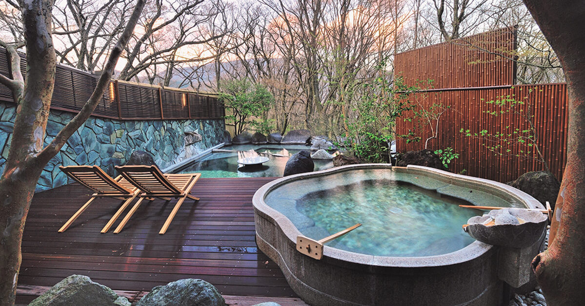
Рёкан «Гора Хана-оги Мадока-но мори» открылся в 2014 году в лесу над Горой, у конечной станции канатной дороги Хаконэ. Здесь пахнет деревом, на полу везде татами, в каждом номере своя открытая ванна, а мясо в ресторане жарят на водородной плите.
Выбор
Рёкан, где не сидят взаперти в номере
Хаконэ ближе всех курортов к Токио: горы, озеро и горячие источники на каждом шагу. Отсюда и число гостиниц, и трудность выбора. В 2019 году автор, который много лет пишет о японских рёканах, заметил, что дорогие рёканы Хаконэ всё больше похожи друг на друга. Лобби маленькое, чтобы гости не встречались, большой купальни нет, вместо неё ванна на балконе, ужин в отдельной комнате. Для того, кто едет в рёкан ради неспешной жизни всего дома, этого мало.
Ему хотелось иного: выпить чаю в лобби, заглянуть в лавку при рёкане, а главное, растянуться в большой купальне с видом на горы. Такой дом он нашёл в рёкане «Гора Хана-оги», а потом у тех же хозяев появился второй, «Мадока-но мори». По его словам, новый рёкан ничем не уступает старшему.
«Мадока» значит «круглый, мирный», «мори» значит «роща». Хозяева вкладывают в название пожелание: пусть здесь завязываются добрые знакомства, а гостей встречают с «круглым», то есть мягким и открытым сердцем.
Дом
Водяное колесо и запах дерева
Ближайшая станция рёкана Соунзан, верхняя станция фуникулёра и нижняя станция канатной дороги Хаконэ. От парковки к входу поднимаются на лифте, и первое, что видит гость у дверей, это водяное колесо. В горах Хаконэ оно кажется неожиданным, но на фоне пологой гряды и под шум воды сразу настраивает на спокойный лад.
За дверью просторное лобби с высоким потолком и толстыми балками. Внутри много редкой старой древесины: кипарис хиноки, криптомерия и дзельква, пролежавшие в земле века. Дерево пахнет так, что гость успокаивается с порога. Мебель сделали столяры из Хиды в префектуре Гифу, в том числе фабрика «Китани». Татами лежат во всём рёкане, даже в лобби: на них стоят простые современные диваны и кресла.
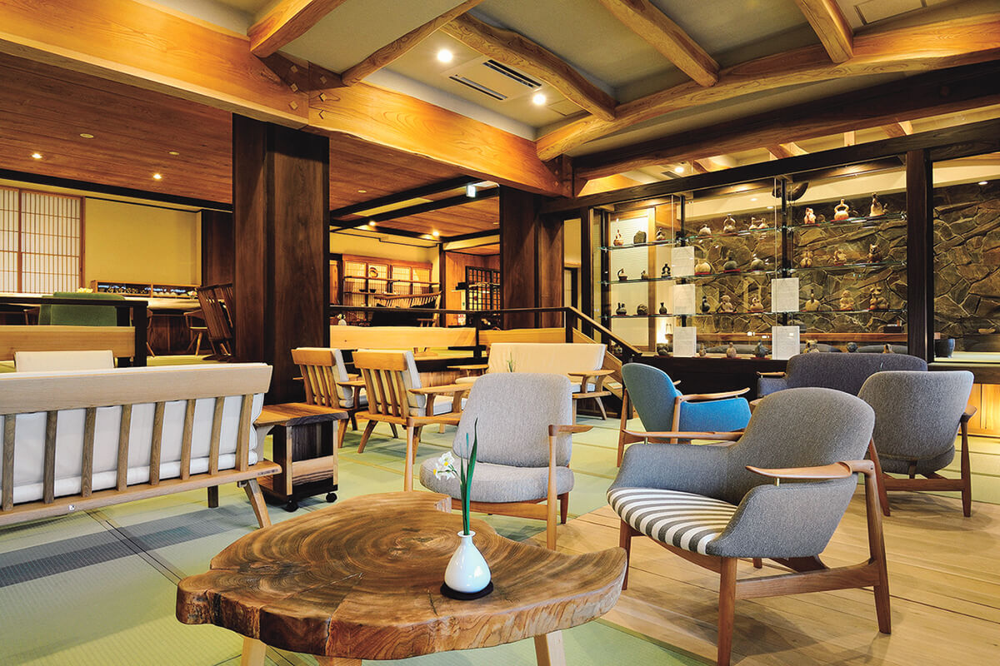
В 2019 году для курящих гостей была отдельная комната вокруг очага ирори, с чайником на крюке и каменной стеной.
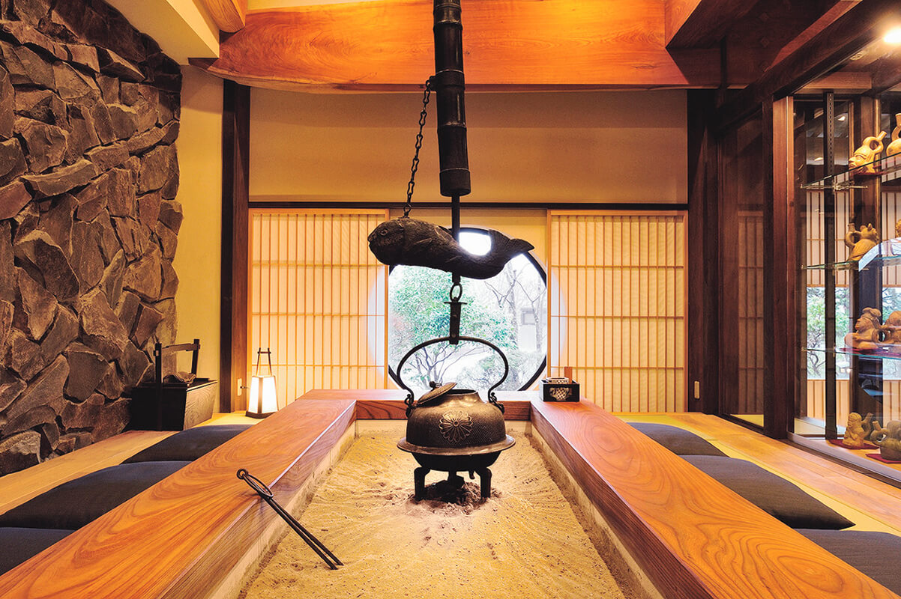
Номера
Двадцать номеров и двадцать ванн
Номеров двадцать, планировок тринадцать, стены везде оштукатурены, а названия номерам дали по растениям Хаконэ. Все номера просторные, с видом на горы и с полуоткрытой ванной на балконе. Вода в номерах из одного источника, в большой купальне из другого, и каждый номер устроен по-своему: и вид, и планировка разные, поэтому даже в повторный приезд есть что открыть.
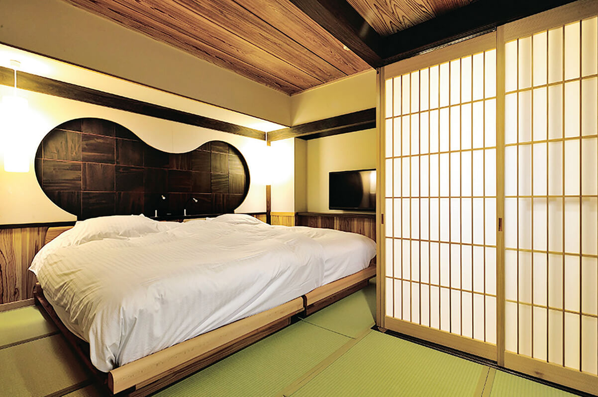
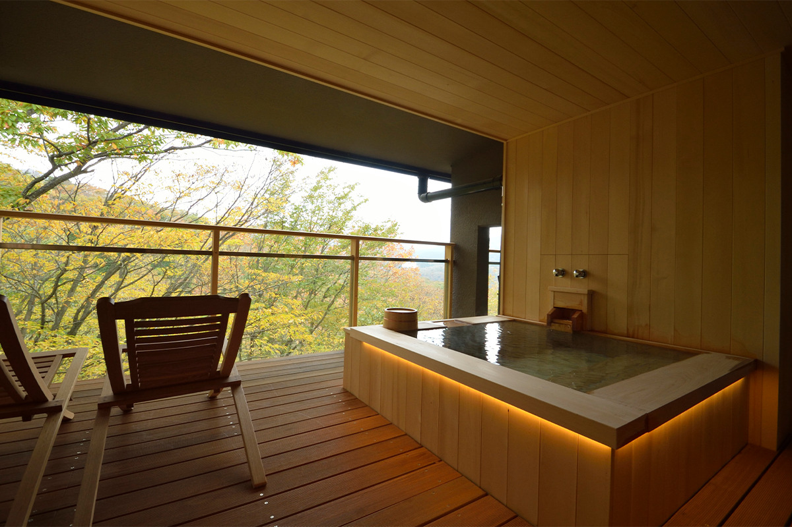
Онсэн
Два источника в одном лесу
У рёкана два собственных источника. Вода в ваннах номеров считается полезной для кожи: это морская вода, которая в древности оказалась запертой под землёй. В большой купальне вода другая: сульфатная, смешанная с вулканической, слабощелочная и увлажняющая кожу.
Купальни стоят в отдельном здании, их две, и мужчины и женщины меняются в них по часам. Устроены они по-разному, поэтому их интересно сравнить. В каждой есть внутренняя ванна и открытые ванны, развёрнутые к лесу: сидишь в воде будто посреди леса, а из внутренней и из открытых ванн видны горы Хаконэ.
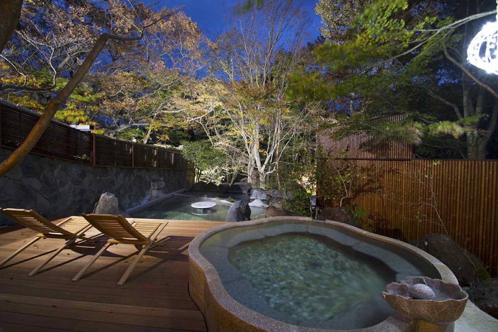
Ужин
Морская рыба и говядина из Хиды
Еда здесь такая же, как сам дом: без лишнего блеска, но по сезону. В меню, показанном в 2019 году, были закуски из молодого бамбука, бразения со сливовой пастой, бобы в соусе из тофу и речная рыбка в сладком соусе. Сашими делали из рыбы, выловленной в Одаваре и соседнем Нумадзу. Фирменным блюдом рёкана называли отборную говядину из Хиды.
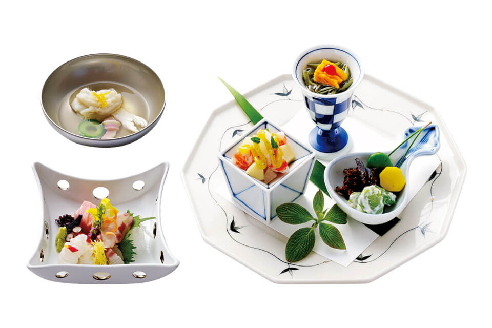
Водород
Плита, которая не выбрасывает углекислый газ
В 2023 году в «Мадока-но мори» начали готовить на водородных плитах. Как писали в 2023 году, это первая в мире попытка подавать в рёкане блюда, приготовленные на водороде. Водород горит без выброса углекислого газа. Когда он соединяется с кислородом, у плиты становится влажно, и продукт жарится в облаке пара, как бы запекается и тушится сразу. Жар сильный, поэтому готовится всё быстро: снаружи хрустящая корочка, внутри сок.
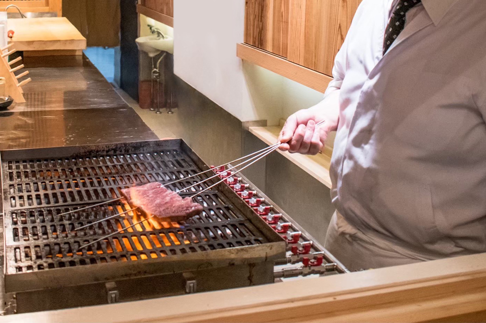
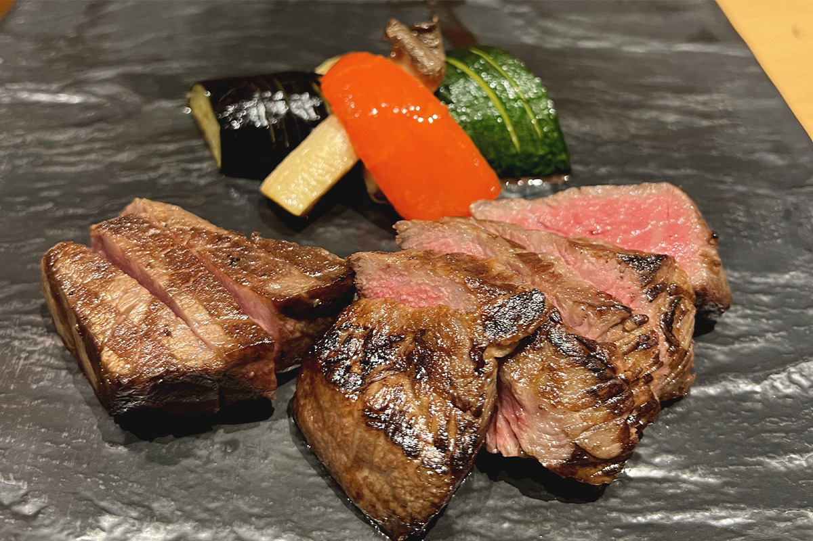
Две плиты сокращают выбросы рёкана примерно на 1,2 тонны из 20 тонн углекислого газа в год. Обходится водород примерно в 2,4 раза дороже пропана. Решилась на это хозяйка рёкана. В 2019 году тайфун № 19 (Хагибис) обрушил на Хаконэ ливни, и в рёкан той же группы «Соункаку» у станции Соунзан сошёл оползень. Рёкан, открытый в 1925 году, больше не смог работать.
«Мы думали отстроить его заново, но решили начать с малого шага: заняться климатом в рёкане, который уже есть. Хочется, чтобы гости не только вкусно поели, но и задумались об экологии»
хозяйка рёкана
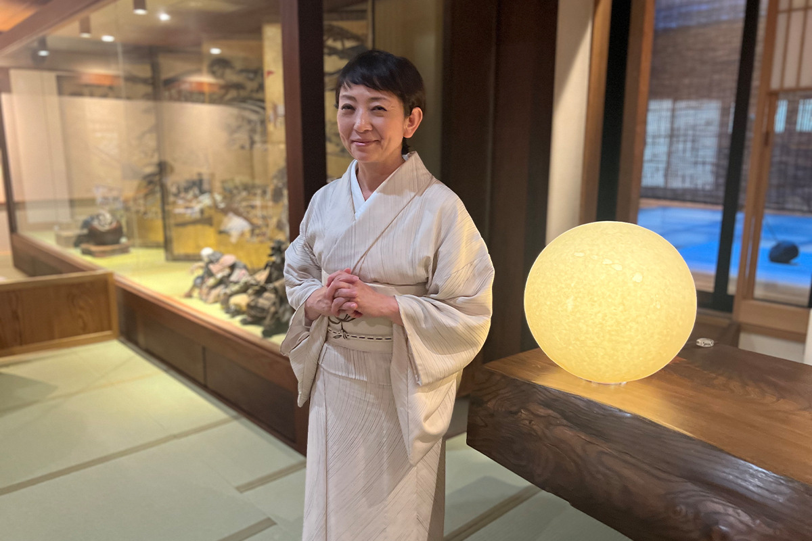
Плиты разработала молодая компания, которая хочет убрать углекислый газ из ресторанной кухни. В 2023 году рёкан собирался перейти на возобновляемую энергию и водородные топливные элементы, отказаться от пластиковых принадлежностей и бутылок, а в октябре поставить установку для пищевых отходов.
В 2025 году водородная плита стояла в «Каппо Мугэн», ресторане со стойкой, где повар готовит прямо перед гостем из сезонных продуктов Хаконэ и других краёв Японии.
Кола
Крафтовая кола с соевым соусом
В конце 2025 года рёкан устроил совместный проект с крафтовой колой «Санкаку Микадо», которую выпускает производитель соевого соуса Yamasa. Это сироп из семи специй: гвоздика, кардамон, кориандр, корица, чёрный перец, мускатный орех и куркума, а для глубины в него добавлен соевый соус. Его разбавляют газированной водой, смешивают с сакэ, чаем или соком и подают к еде.
Имя у колы историческое. В 1885 году глава Yamasa в восьмом поколении сделал по образцу американского вустерского соуса соус на основе сёю и отправил его в Америку в деревянных бочках. Там его разливали в треугольные бутылки и продавали как «Микадо соус». «Санкаку» по-японски значит «треугольник». По старому рецепту и подобрали специи для колы.
Бар
Коктейли после купальни
В рёкане есть бар в стиле амбара-кура, похожий на тайное убежище. На зиму 2025 года в баре придумали напитки на этой коле. «Cheeky Monkey» это ром с банановым ликёром: тропический вкус, а за ним пряный аромат колы. «Spicy Chick» безалкогольный, на шоколаде. Кислинка и цитрусовые ноты колы хорошо ложатся на шоколад, а капля жжёного соевого соуса даёт вкус карамели.
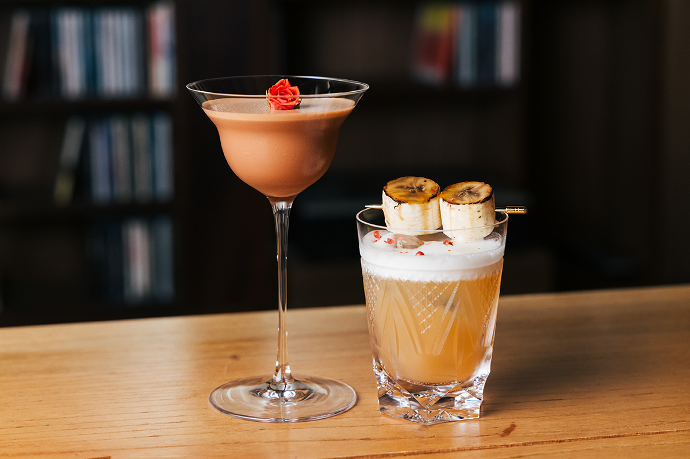
«У этой колы сложный, округлый аромат, а в послевкусии чувствуется соевый соус. Ни у кого больше такого нет. Вместе с другими продуктами вкус усиливается и становится плотнее»
бартендер рёкана
Шеф-повар рёкана тоже попробовал колу на кухне. Он придумал котлету из говядины оми из мясной лавки «Сакаэя» в духе кусикацу, жареных шпажек. Для соуса чёрный и белый рис варят с колой, потом добавляют соевый соус, уксус и фрукты, а в конце снова колу: при нагреве аромат уходит, и последняя порция оставляет специи в соусе. Сладость, кислота и пряность сливаются в одно. К котлете подавали коктейль «Микадо Коллинз» на джине с ароматом зелёного чая, с колой и цитрусом судати.
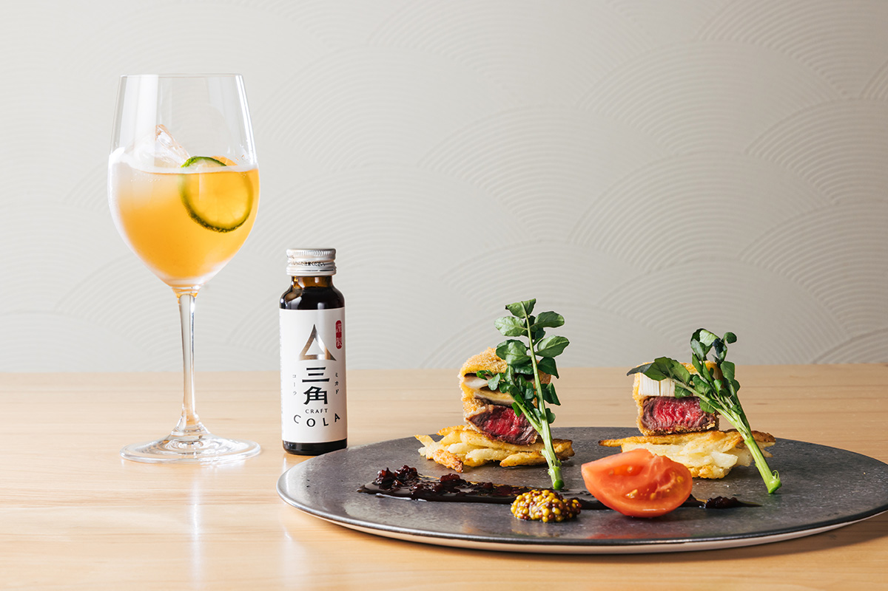
«Говядину оми гости обычно едят с солью. Колу в готовке я использовал впервые и понял, что она подходит и для соусов. Хороша будет к ростбифу, а сиропом с колой можно полить мороженое или варабимоти»
шеф-повар рёкана
«Гора Хана-оги Мадока-но мори»
- Адрес
- префектура Канагава, Хаконэ, Гора, 1320-862
- Телефон
- +81 460-82-4100
- Номера
- 20
- Цены / Вход
- от 43 000 иен с человека за ночь с ужином и завтраком, с налогом и сервисом (2025)
- Заезд / выезд
- 15:00 / 11:00
- Как добраться
- от станции Гора горной железной дороги Хаконэ трансфер рёкана (по предварительной заявке); около 10 минут пешком от станции Соунзан; на машине около 25 минут от развязки Хаконэ-гути дороги Одавара-Ацуги
Фото: Ко Миядзи, Канако Накамура, Майко Фукуи.